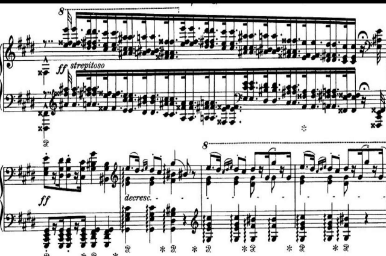
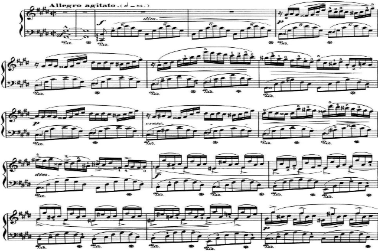
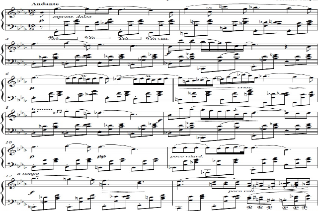
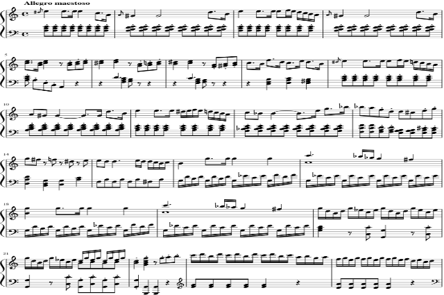
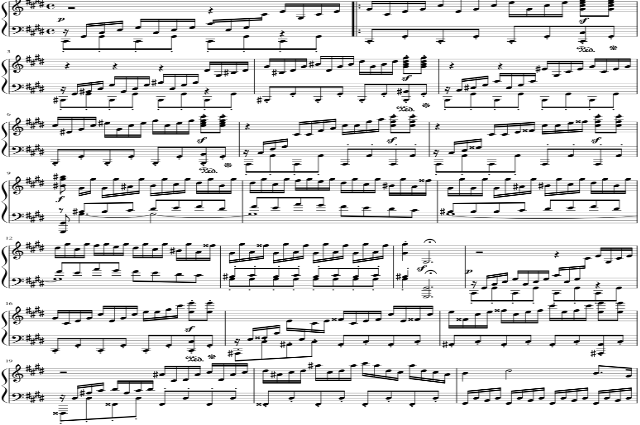
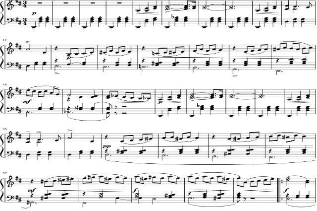

Listen
Some Best Music In the Word.

Liszt - Hungarian Rhapsody No. 2

Chopin - Fantaisie-Impromptu (Op. 66)

Chopin - Nocturne in E Flat Major (Op. 9 No. 2)

Mozart - Piano Sonata No. 8 in A minor, K. 310 (1st Movement)

Beethoven - Moonlight Sonata (3rd Movement)

Tchaikovsky - Waltz of the Flowers (The Nutcracker Suite)
Copyright 2021 Igor Henrique(ptmgkira). All rights reserved.
|